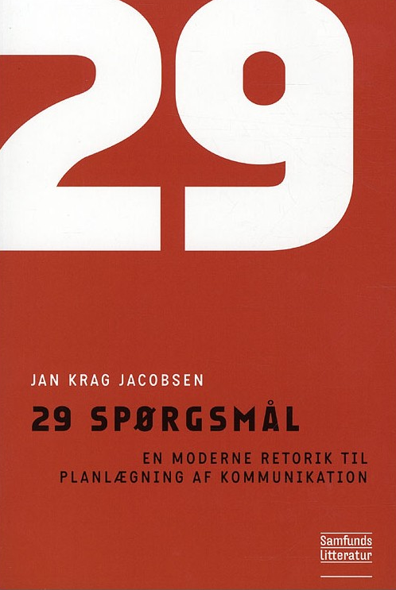
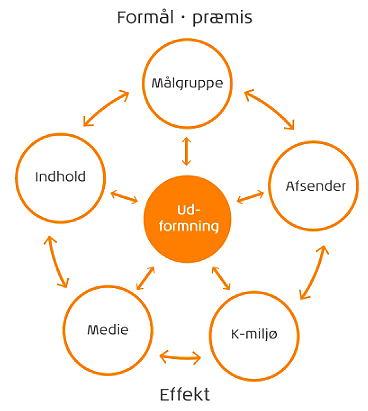

Produktionsmodeller
Produktionsmodeller hjælper med at igangsætte ens opgave med en klient. De hjælper med at planlægge det konkrete produkt sammen med ens klient, så man begge har overblik over hvad der skal blive lavet.
To produktionsmodeller er De 29 Spørgsmål og den nye bollemodel.
De 29 spørgsmål er lavet af Jan Krag Jakobsen og er en mere dybdegående model af Lasswells model: ”Who says What in Which channel, to Whom, with What effect?“. I stedet for én sætning med fem spørgsmål, har han skrevet en bog om emnet, hvor der bliver stillet 29 spørgsmål, der giver et mere detaljeret og brugbart svar.

Den nye bollemodel er en model der fokuserer på de forskellige relationer imellem seks forskellige boller, hvor man skal udtænke hvad effekt de forskellige boller har over for hinanden, og hvad der vil ske med andre boller hvis man ændrer noget i en bolle.
